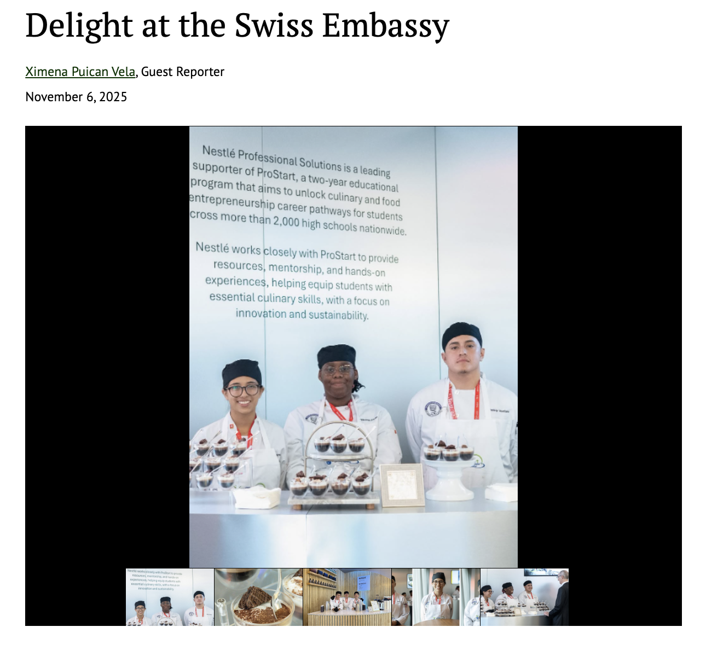
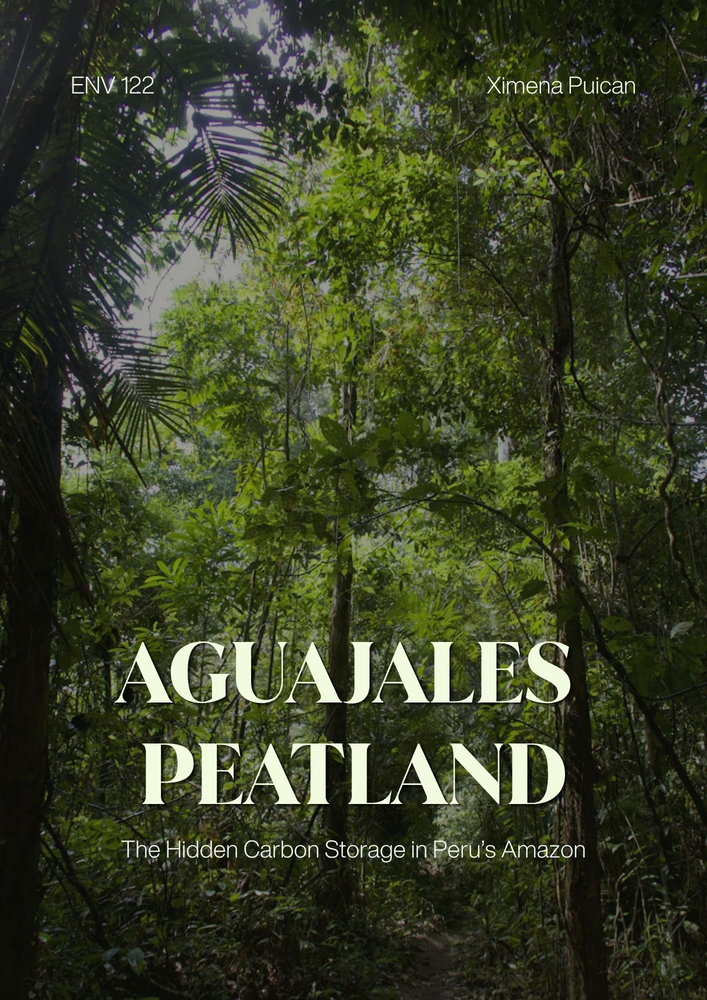
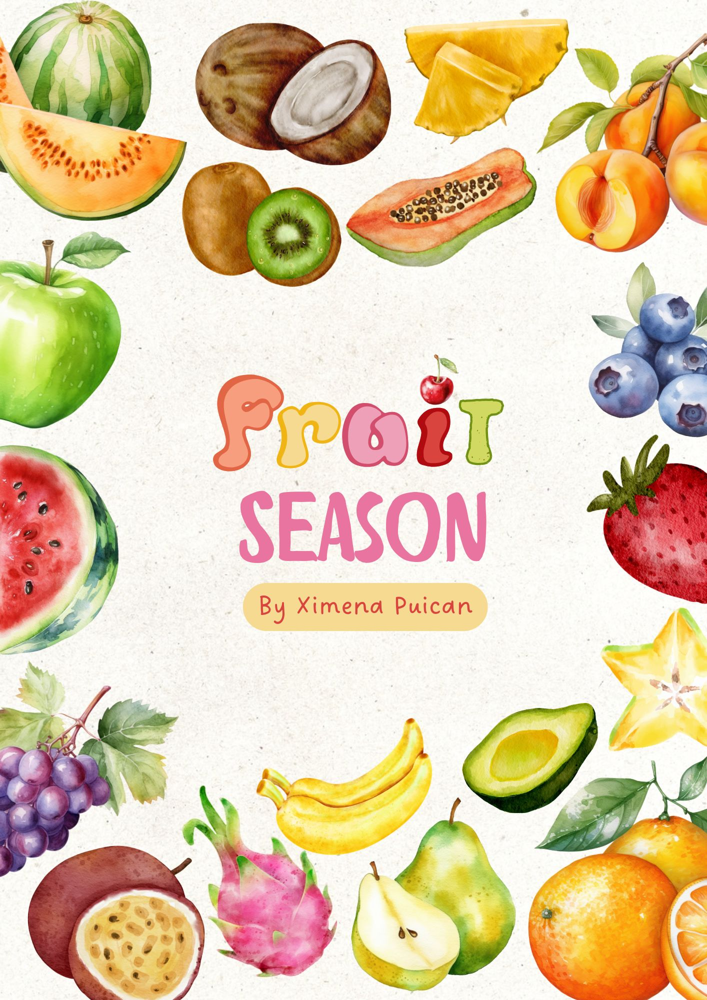

Here you can see some of the articles or writting pieces I did for some of my classes or clubs.
On September of 2025, a few of my classmates in the Culinary Arts program participated in the annual food and cultural event of the Swiss Embassy. To get more people to know about this event and how it benefited our program and the school, I decided to write an article about it in our school newspaper, the Chronicle. In the short article, Delight at the Swiss Embassy, I use my writing skills to inform the reader about this event, make them picture it and understand the impact of this event for my school and my program.

My final research project for DE Environmental Science 122 focused in the Aguajales, palm swamps peatlands that are mostly common in forests in the Amazon, as one of the most important carbon storage ecosystems in South America. The purpose of the project was to explain their importance to the world and their benefits for indigenous communities, biodiversity, climate regulation, and wildlife, as well as showing the possible negative outcomes if they are not protected properly.

For my Culinary Arts class, each student had to make a cookbook with recipes that included at least one fruit of each type of fruit. I chose to make both sweet and savory recipes for anyone that would want to try something new or different. Feel free to take a look at the cookbook by clicking the image!
